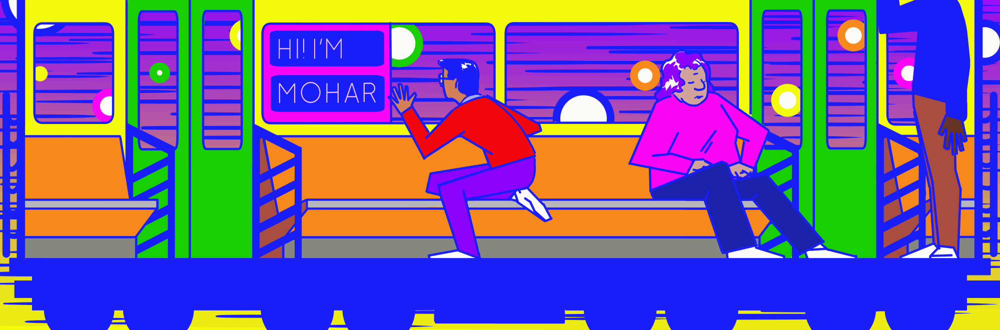
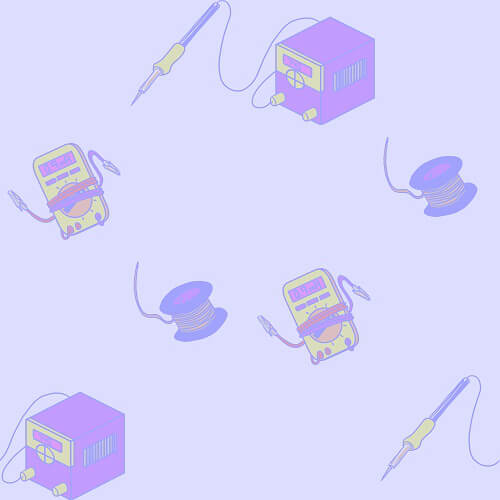
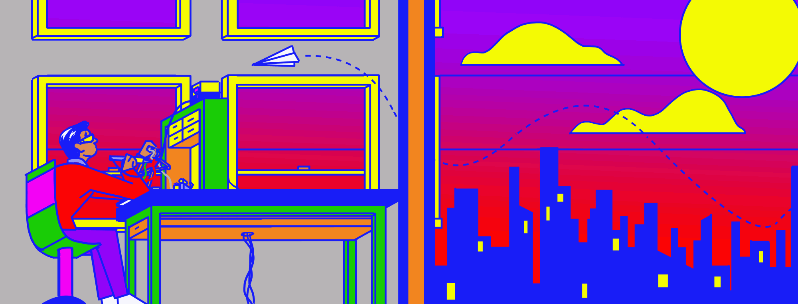
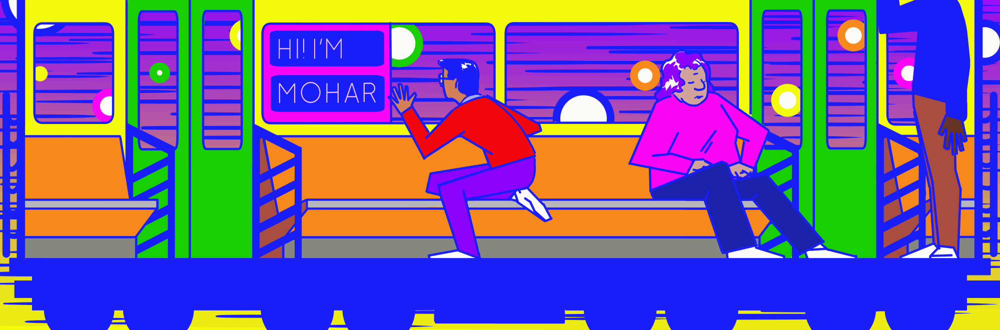
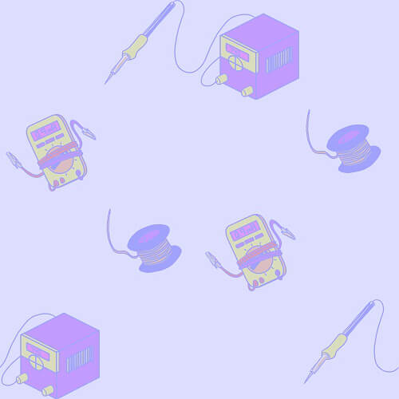
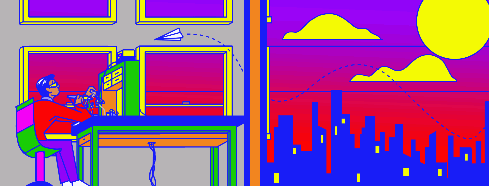

My First Design
- Individuals interested in surveying my art practice
- Individuals interested in my technical experience for employment/career opportunities
- Include sections for comics, research projects, technical projects and personal information
- Concise descriptions of projects to retain visitors’ attention
- Capacity to navigate easily from page to page
- All information easily and efficiently accessible from home page
- Aesthetically pleasing without being flashy
- Allow various projects on display to shine without the web design drawing too much attention to itself
- Offer a quick and seamless user experience for users who do not have the time to delve deep into the site
- Format to add new projects easily without redesigning entire site
- Used html, css, javascript and heavily modified skeleton.css column framework to build this website.
- Designed one home page with scrolling navigation bar and pages for each project
- Split home page into four sections: About me, technical projects, art projects and contact information
- Modular display of projects allows for easy addition of new projects to the home page
- Drew banner on home page to augment the page’s design.
- Muted color scheme to focus most of user attention on my projects
Target Users
Parameters:
Initial Website Layout:

Solution:
January 2019 Re-Design
- Design was bland and unnmemorable
- Did little to convey my character as a creator
- Technical and artistic projects did not cohere with one another well
- Individuals interested in surveying my art practice
- Creative technologists interested in my work
- Artistically engaging and memorable site design without being overwhelming
- Convey a sense of my own somewhat offbeat and quirky artistic inclinations without being tacky
- Convey a sense of wonder and curiousity towards the world around me - conveyed through both tech and art
- Add a sense of movement and energy to the web design to reflect the affective, kinetic work I'm interested in making
- Use space in website in a more engaging manner
- Maintain easy and intuitive access to content
- Make the experience of interacting with my website remarkable in itself
- The website's design must be an artistic product of its own
- Must visually bridge the gap between my technical and artistic passions
- Selected a bright color scheme of blue, magenta, purple, orange, bright yellow and white, harkening back to vintage pop culture color schemes
- Replaced banners with eye-catching animations intended to add a dynamism to the front page
- Reorganized front page projects and sections overall into horizontal tiers, creating a repeated rhythm to the viewing experience
- Replaced white space with wallpaper-esque background to emulate DIY zine patterns
- Illustrations depict me interacting with the world around me, creating a creative persona through the imagery
- Emphasis on sensation and color underlines the inspirations that lead me in my artistic and my technical endeavors
- Refrain from using animations in "Tech" and "Art" sections to ensure that projects are user's focus
- Bookend front page with animated gifs to provide continuity to viewing experience from beginning to end
Flaws with previous iteration
Target Users
Parameters:
Current Website Illustrations:
 





Current Website Layout:

Solution: